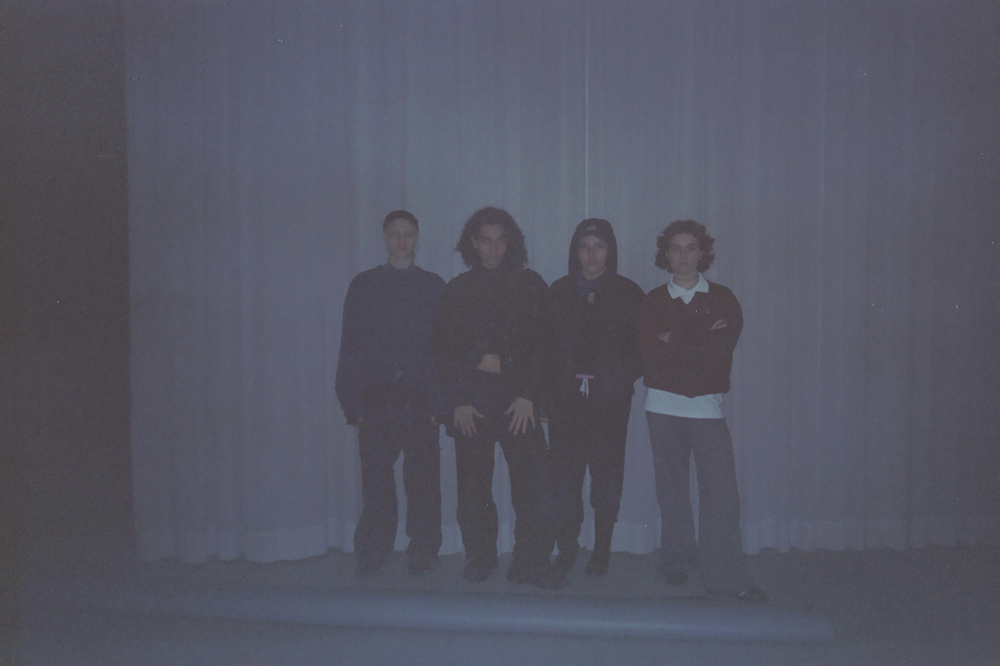
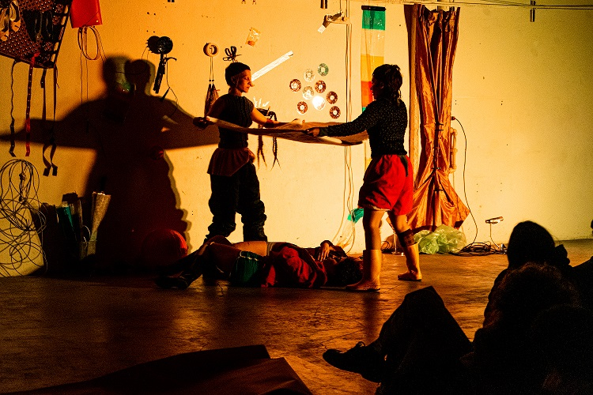
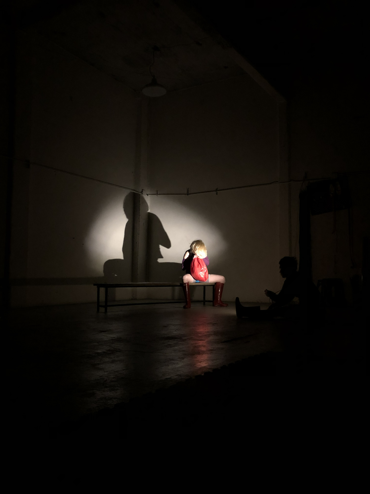
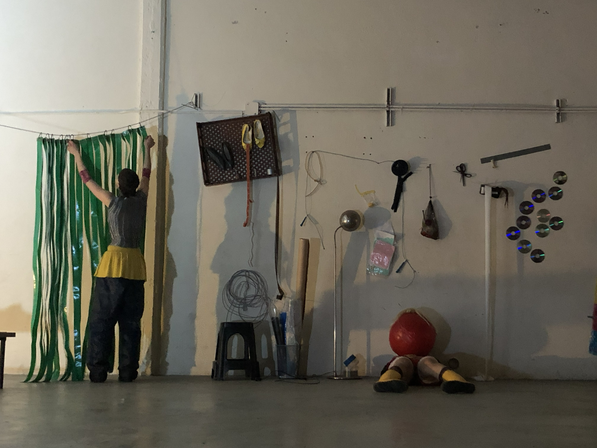

REVUELTO CONJUNTIVO
revuelto conjuntivo es un grupo con fines investigativos que articula métodos de creación con prácticas móviles-maleables entre performance, escritura, danza, baile y dibujo. Esta configuración como de-generadora de sentido que compone deformaciones semejantes a un ejercicio redundante, una receta, una desdanza, un principio de final.
El revuelto se origina en el año 2024 y está conformado por aris chicco (Córdoba), julieta yos (Santa Fe), saluminé (Santa Fe), y lila timpanar (Mendoza).
PROYECTOS :
ITINERARIO ERRANTE O EL MUNDO DE LAS ERRANCIAS
CABA, 2025
sinopsis:-:aparente aparato rastrea superficie posible. partiendo de un objeto más: localiza minúscula vertiente de piel, el lugar de simulacro. defectos suceden en el espacio delimitado torciendo el tiempo o al menos simulan hacerlo.-espacio-frecuencia situante construcción de-pendiente- su alianza temporal es frágil como objeto estampándose contra aparente aparato rasante. curva amortigua sus gestos, sus confusos gestos. re-componen, re-versan: desglosan descompuestas en un paisaje chirriante.la materia se dilata, delata el reservorio en deterioro. tal vez archivar la conversación bastaría, tal vez se dispersen como intento de final. j. e. r. s. se reunirán.
asistencia técnica:-: @_lakapri__



TEXTURA DE UNA DISTANCIA
CABA, 2025
sinopsis:-:ángel de la guarda dulce compañía que la distancia con mi ami lo solucione la telepatia
com-ponemos un texturizado conjuntivo, que ambas bien sabemos que tarde o temprano se convertirá en uno de esos recuerdos nostálgicos que una ve y dice "que ganas de estar ahí de nuevo" entonces nos lanzamos así como quien de clavado se tira a la pileta a componer una textura del recuerdo, sin saberlo, hacia y para nuestro futuro aparentemente distal.
antes, meses antes, no tantos, junto a n y m inventariamos una receta del desdanzar, una cosa que no se sabe si es principio o final, un simple trailer o un precoz resumen.
entre el tiempo y la acción que perdura dentro de él, nos dirigimos hacia una óvalo para hacer lo que creemos saber hacer, subvertir el tiempo compartido (de) con esxs otrxs, y quedarnos en el filo de la filosofía, cavar un pozo, para dejar ahí todos los relojes del mundo, para reaprender a contar hasta ocho, como les enseñan a las bailarinas.
caminamos cuadras y cuadras hasta atrevernos a arriesgar un número que es el que dispondrá la cantidad de palabras que se dirán en toda la conversación, la temática es la muerte, por que no hay tiempo corrompido ni textura del recuerdo sin memoria.
archivo de video conjurado en noviembre de 2025, en el asfalto de buenos aires.